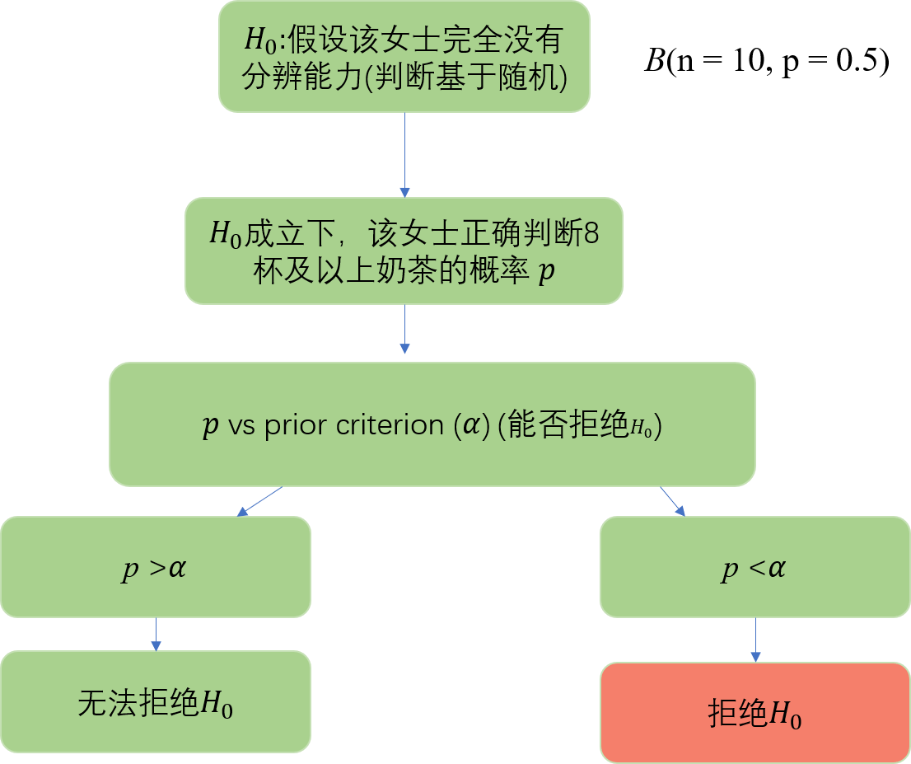
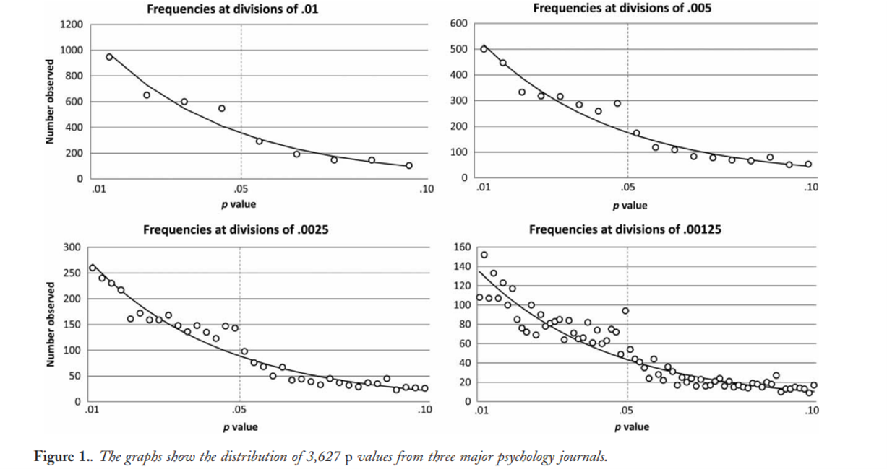

11 - 假设检验(2)
(Hypothesis testing 2)
Hu Chuan-Peng
2023-05-10
回顾(review)
置信区间与假设检验(Confidence interval and hypothesis testing)
假设检验原理(Hypothesis testing principle)
零假设与备择假设(Null Hypothesisand alternative hypothesis)
双侧检验与单侧检验(two-sided and one-sided test)
假设检验的基本步骤(basic steps)
假设检验的步骤
假设检验步骤
- 提出假设；
- 根据虚无假设𝐻_0所提供的前提条件，选择合适的统计模型；
- 规定显著性水平α；
- 计算检验统计量的值；
- 做出决策。
- 南京某创造力培训班声称他们培训非常有效，在他们培训结束后36个6岁幼儿平均创造力潜质为105。假定正常的6岁幼儿的创造力潜质分数为100，标准差为15， 家长们想要了解该培训班是否真的有效，该如何决策？
基本步骤
1.提出假设。根据研究的问题，提出相应的虚无假设\(𝐻_0\)和研究假设\(𝐻_1\)，选择使用单侧检验。
\(𝐻_0\)：经过培训班培训后的6岁幼儿平均创造力潜质与正常幼儿没有差异。
\(𝐻_1\)：经过培训班培训后的6岁幼儿平均创造力潜质优于正常幼儿。
- 根据虚无假设\(𝐻_0\)，对统计模型进行具体化。 6岁幼儿总体的平均创造力潜质𝑋̅呈现正态分布，可使用正态分布进行检验。
- 确定显著性水平α，α确定后，否定域也随之被确定了。 指定α = 0.05（拒绝零假设犯错的可能性）。 单侧检验的临界点 \(𝑍_{0.05}\)=1.645
- 基于H0所设定的统计模型，计算检验统计量的值。 \(\sigma_{\bar{X}} = \sigma_0/\sqrt{n} = 15/\sqrt{36} = 2.5, \quad Z = (\bar{X} - \mu_0)/\sigma_{\bar{X}} = (105 - 100)/2.5 = 2\)
- 5.做出决策。 单侧检验的临界点 \(𝑍_{0.05}=1.645， 𝑍 = 2 > 𝑍_0.05，\)
在α = 0.05显著性水平上拒绝虚无假设，即 𝜇_𝑋 ̅>𝜇_0。
1 p 值及其计算
基本步骤
Case 1:
正态分布
Starndard error (SE) : \(\sigma_{\bar{X}} = \sigma_0/\sqrt{n} = 15/\sqrt{36} = 2.5, \quad Z = (\bar{X} - \mu_0)/\sigma_{\bar{X}} = (105 - 100)/2.5 = 2\)
Case 2:
女士品茶：先加茶后加奶 VS 先加奶后加茶？
假如做了以下试验：
（1）煮10杯茶，其中5杯先加奶，剩下5杯则是先加茶。
（2）这10杯茶被装在外观一样的茶杯当中，以随机的顺序被送去品尝；
（3）女士需要在品尝之后分辨出哪些是先加奶的，哪些是先加茶的。
结果：
- 该女士正确判断8杯奶茶。
1.提出假设。根据研究的问题，提出相应的虚无假设\(𝐻_0\)和研究假设\(𝐻_1\)，选择使用双侧检验还是单侧检验。
\(𝐻_0\)：无法判断茶的制作顺序。
\(𝐻_1\)：能够判断茶的制作顺序（单侧）。
- 根据虚无假设\(𝐻_0\)所提供的前提条件，选择合适的统计模型。
- 对奶茶制做过程判断为正确或者错误，可视为伯努利试验，可用二项分布进行检验。
- 规定显著性水平α
- α = 0.05，则如果该女士正确判断?杯奶茶后，可以拒绝\(H_0\)
- 计算检验统计量的值。
P (x = 8 | n = 10, p = .5) = 0.0439
P (x >= 8 | n = 10, p = .5) = 0.0547
P (x > = 9 | n = 10, p = .5) = 0.0107
- 做出决策。
𝛼 = 0.05
P (x >= 8 | n = 10, p = .5) = 0.0547
p 值
$p-value :𝑝=𝑃(𝑑𝑎𝑡𝑎| 𝐻_0) $
𝑝 = 𝑃(该女士正确判断8杯奶茶或以上 |“假设该女士完全没有分辨能力”) = 0.0547
小概率原理：
- 小概率事件：发生的概率很小的事件，一般认为”小概率事件在一次试验中实际不会发生”。
假设检验的原理：
- 带有概率性质的反证法，不是”百分百的反证法”，是有可能犯错误的，这种错误被规定在一个小概率范围内。
显著性水平α：研究者权衡后的”小概率”的上限。
否定域：
在假设检验中，根据𝐻_0建立的概率分布模型，由显著性水平α结合这些概率分布模型确定数轴上某些区间，检验统计量在其中出现的概率小于或等于α，则称这些区间为否定域。
否定域的界限为临界值。

4 种情况
| \(H_0\)为真 | \(H_0\)为假 | |
|---|---|---|
| 不能拒绝\(H_0\) | √ | × |
| 拒绝\(H_0\) | × | √ |
p 值
p值衡量观察到的结果是否可归因于偶然。
不能给出期望的答案:假设是正确的概率是多少?
这些可能性取决于结果有多强，最重要的是，首先取决于假设的合理性。
p 值
“假设原假设为真，我得到当前结果的概率是多少？”
$𝑝=𝑃(𝑑𝑎𝑡𝑎 | 𝐻_0) $
𝑝=𝑃(该女士正确判断8杯及以上|“假设该女士完全没有分辨能力”)
“基于当前结果，原假设为真的概率是多少？”
we can’t get : \(𝑃(𝐻_0 |𝑑𝑎𝑡𝑎)\)
- 𝑃 (“该女士完全没有分辨能力” | 该女士正确判断8杯及以上)
p 值
We can get : $𝑝=𝑃(𝑑𝑎𝑡𝑎| 𝐻_0) $
- 𝑝=𝑃(该女士正确判断8杯及以上|“假设该女士完全没有分辨能力”)
we can’t get : $𝑃(𝐻_0 |𝑑𝑎𝑡𝑎) $
- 𝑃 (“该女士完全没有分辨能力”| 该女士正确判断8杯及以上)
$𝑃(𝑑𝑎𝑡𝑎| 𝐻_0)≠ 𝑃(𝐻_0|𝑑𝑎𝑡𝑎) $
p 值的计算
正态分布
左侧检验的P值为检验统计量X 小于样本统计值C 的概率：
- P = P{ X < C}
右侧检验的P值为检验统计量X 大于样本统计值C 的概率：
- P = P{ X > C}
p 值的计算
正态分布
- 双侧检验的P值为检验统计量X 落在样本统计值C 为端点的尾部区域内的概率的2 倍：P = 2P{ X > C} (当C位于分布曲线的右端时) 或P = 2P{ X< C} (当C 位于分布曲线的左端时) 。
- 假定正常的6岁幼儿的创造力潜质分数为100，标准差为15，分别三个孩子的创造力潜质进行测量，所得结果分别为140，110，135，请问这三个孩子中是否存在创造力超常者？
- 从平均值为100，标准差为15的正态分布总体抽取100个样本，重复次数为10000次
- 样本平均值在抽样分布中的位置
p 值分布直方图
- \(H_0\)在多大程度上可能为真->p值分布
| \(H_0\)为真 | \(H_0\)为假 | |
|---|---|---|
| 不能拒绝\(H_0\) | √ | × |
| 拒绝\(H_0\) | × | √ |
- Nuzzo,2001,Nature
p 值的使用
- Masicampo,2012,The Quarterly Journal of Experimental Psychology
- Masicampo,2012,The Quarterly Journal of Experimental Psychology
- Cristea,2018,PLoS One
- Cristea,2018,PLoS One
- Chavalarias等人基于超过1200万篇MEDLINE摘要和80万篇PubMed Central（PMC）全文（包含摘要）的自动文本挖掘，系统阐述了过去25年（1990-2015年）生物医学文献中的p 值变化。
- Chavalarias D, 2016, JAMA
- Chavalarias D, 2016, JAMA
课堂练习
南京某创造力培训班声称他们培训非常有效，对经过培训后的36个6岁幼儿平均创造力潜质进行测量。经过计算p = 0.01, 以下是 6 个关于上述情境的 p 值的推断，请判断正误:
A.你完全证否了零假设;
B.你发现了零假设为真的概率;
C.你完全证明实验假设;
D.你可推断出实验假设为真的概率;
E.你可以得知, 你拒绝零假设时犯错的概率;
F.如果重复多次实验, 99%实验结果显著。
2 p 值的误用
Fallacy 1
A.你完全证否了零假设;
C.你完全证明实验假设;
零假设检验(NHST)无法提供关于科学或社会现象假设的”证明”。
http://www.theresear.ch/research/statistical-significance/p-value-replicability
Fallacy 2
B.你发现了零假设为真的概率;
D.你可推断出实验假设为真的概率;
E.你可以得知, 你拒绝零假设时犯错的概率;
- p值的计算前提是假设零假设为真，但是它不是假设成立的合理概率。
- p值只是表明数据符合零假设代表统计模型的程度。因此， p = 0.01表明数据与统计模型(包括所检验假设)预测的数据不太接近。
Fallacy 3
F.如果重复多次实验, 99%实验结果显著。
“Replication delusion”: one minus the p-value describes the probability of replication.
如果人们认为统计显著性是能够区分H0为真与H1为真的阈值，则继而认为统计显着的结果更容易被复制。
事实上，统计显著性仅是对统计检验结果是否符合H0模型程度的量化，而无法对产生数据的模型进行真正的解释，也无从预测重复实验的概率。
Fallacy 3
F.如果重复多次实验, 99%实验结果显著。
“Replication delusion”: one minus the p-value describes the probability of replication.
p 值对样本大小和潜在效应大小以及实验和分析中出现的自然随机变化很敏感。即使重复实验，完全随机误差也会导致 p 值变化几个数量级。
- 胡传鹏等, 2016, 心理科学进展
- Lyu, X., … , Hu, C-P. 2021, Journal of Pacific Rim Psychology
http://www.theresear.ch/research/statistical-significance/psychologist-nhst-misinterpretations#nhst-main
http://www.theresear.ch/research/statistical-significance/psychologist-nhst-misinterpretations#nhst-main
Xiao-Kang Lyu et al. 2021 Journal of Pacific Rim Psychology
Xiao-Kang Lyu et al. 2021 Journal of Pacific Rim Psychology
Fallacy 4
A non-significant p-value indicates no effect between the treatment and control.
这种错误的理解被称为无效谬误。
统计上不显著的结果（通常定义为大于0.05的p 值）仅表明数据在零假设模型下并不”奇怪”。对于零假设本身是否为真并未提供任何信息。
Fallacy 4
A non-significant p-value indicates no effect between the treatment and control.
Survey Most recent time period* No. of. articles w/ errors Total No. of articles Schatz P, et al (2005). 2001-2004 81 170 Fidler F, at al (2006). 2005 42 100 Hoekstra R, (2006). 2002-2004 145 259 Bernardi F, et al (2017). 2010-2014 34 262
错误产生的原因
p 值计算关键预设是原假设为真。较小的 p 值仅表明观察到的数据与原假设不太兼容。这可能出于三个原因：
原假设是错误的；
在数据中观察到很大的随机抽样误差；
统计模型不正确。
。。。
错误产生的原因
即使由于原假设为假而生成了一个小的 p 值，这并不总是具有实际意义。
统计显著性是对测试结果的解释，并未对产生数据的模型进行任何的探索。
错误产生的原因
具有统计学意义的 p 值可能具有较高的误报风险。
p 值可能对数据中的随机误差敏感。
这些随机误差很容易导致p值超过统计显著性阈值。此外，如果非随机误差存在于数据生成过程中并且未在模型中明确说明，则它们将影响 p 值。
美国统计学会关于p 值的6个原则
- P-values can indicate how incompatible the data are with a specified statistical model .
- (p 值可以表明数据与某个特定统计模型之间不相容程度。)
- P-values do not measure the probability that the studied hypothesis is true, or the probability that the data were produced by random chance alone.
- (p 值不能衡量研究假设为真的概率, 也不能衡量数据仅 由随机因素造成的概率。)
Ronald L. Wasserstein & Nicole A. Lazar (2016) The American Statistician
- Scientific conclusions and business or policy decisions should not be based only on whether a p-value passes a specific threshold.
- (科学结论、商业或政策上的决策, 不应仅取决于 p 值是否达到了某个特定的阈值。)
- Proper inference requires full reporting and transparency .
- (在完整报告和透明的基础上才能做出合理的推论。)
- A p-value, or statistical significance, does not measure the size of an effect or the importance of a result.
- (p 值或统计显著性并不能用来衡量效应的大小和结果的重要性。 )
- By itself, a p-value does not provide a good measure of evidence regarding a model or hypothesis.
- (p值本身并不能衡量模型或假设的可信度。)
3 误用p 值的危害
P-hacking
Simonsohn, “P-hacking is trying multiple things until you get the desired result”.
“p 值操纵就是不断地把数据量加倍，直到获得自己想要的结果。”这种行为甚至是下意识的。作者去掉了其中一种条件下的数据，使总体的P值小于0.05。“或者”她是个p值操纵者，总是一边收集数据一边看数据好不好。”
https://www.npr.org/sections/13.7/2014/06/02/318212713/science-trust-and-psychology-in-crisis
- 假定虚无假设为真的条件下，预计收集100个被试，在50个被试时分析一次，100个被试时分析一次。进行50000次模拟，各个p值出现的频次分析，可以看出在p 刚刚小于0.05时的比例偏高。
- 假定虚无假设为真的条件下，预计收集100个被试，在50个被试时分析一次，100个被试时分析一次。进行50000次模拟，各个p 值出现的频次分析，可以看出在p 刚刚小于0.05时的比例偏高。
- 在实验开始之前，确定你大约需要进行几次分析（比如打算收集50人数据，准备在10人、20人、30人、40人和50人时各分析一次，哪次显著了就停止），根据分析的次数，来确定α的阈限取多少（如果是5次的话，大约就需要定为0.0158）。根据模拟的数据来看，如果进行5次分析仍然使用0.05作为阈限的话，一类错误会变高
- 在实验开始之前，确定你大约需要进行几位分析（比如打算收集50人数据，准备在10人、20人、30人、40人和50人时各分析一次，哪次显著了就停止），根据分析的次数，来确定α的阈限取多少（如果是5次的话，大约就需要定为0.0158）。根据模拟的数据来看，如果进行5次分析仍然使用0.05作为阈限的话，一类错误会变高
- 2012年发表在Science上的某篇文章，四个实验中，样本量不断增加，而p值却非常稳定地”恰好”小于0.05。
https://zhuanlan.zhihu.com/p/29317164?utm_source=wechat_session
- 2015年大规模重复实验的分析表明，p值与能够成功重复之间的关系也比较有趣：P值在0.04以上和0.05以下的研究中，被重复出来的最少。
- Original study effect size versus replication effect size (correlation coefficients). Diagonal line represents replication effect size equal to original effect size. Dotted line represents replication effect size of 0. Points below the dotted line were effects in the opposite direction of the original. Density plots are separated by significant (blue) and nonsignificant (red) effects.
Open Science Collaboration, 2015, Science
- 胡传鹏等，2016，心理科学进展
Benjamin, D. J., Berger, J., Johannesson, M., Nosek, B. A., Wagenmakers, E., Berk, R., … Johnson, V. (2017, July 22). Redefine statistical significance.
小结
p 值及其计算
p 值的定义（条件概率）
p 值的计算
p 值的分布
p 值的误用
对p 值的误解
误解产生的原因
如何正确解读p 值
误用p 值的危害
P-hacking
可重复危机